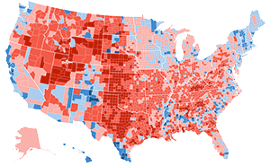
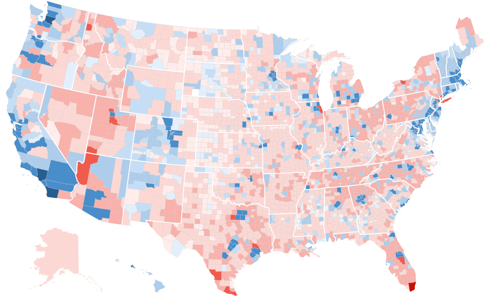
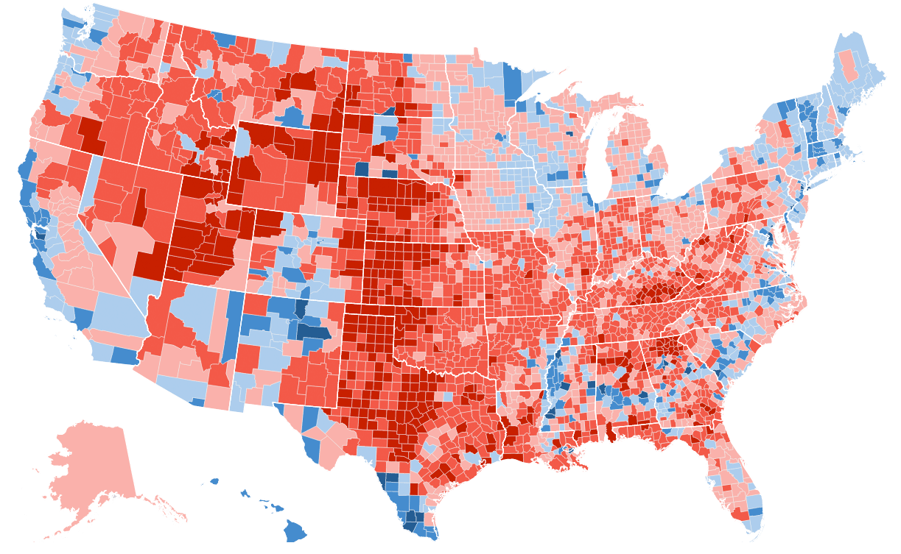

<%= await t.include("lib/_head.html") %>

<!-- <% if (COPY.labels.headline) { %>
<h1><%= t.smarty(COPY.labels.headline) %></h1>
<% } %>

<% if (COPY.labels.subhed) { %>
<h2><%= t.smarty(COPY.labels.subhed) %></h2>
<% } %> -->

<div id="graphic" class="graphic" role="img"
  <% if (COPY.labels.screenreader) { %>
  aria-label="<%- COPY.labels.screenreader %>"
  <% } %>
>

<div class="top-wrapper">
<!--     <div id="map-toggle" class="map-toggle">
        <a id="toggle-2016" class="toggle-btn active" href="#">
            <span>2016</span>
            
        </a>
        <a id="toggle-2020" class="toggle-btn" href="#">
            <span>2020</span>
            
        </a>
    </div> -->
    <div class="legend">
        <span id="legend-year">2016 → 2020</span>
        <h3>Shift in margin, raw votes</h3>
        <div class="party-labels">
            <span class="dem">&larr; Democrat</span>
            <span class="rep">Republican &rarr;</span>
        </div>
        <ul class="key">
            <li class="key-item item-1">
                <b class="bin1"></b>
            </li>
            <li class="key-item item-2">
                <b class="bin2"></b>
                <label>100K</label>
            </li>
            <li class="key-item item-3">
                <b class="bin3"></b>
                <label>10K</label>
            </li>
            <li class="key-item item-4">
                <b class="bin4"></b>
                <label>1K</label>
            </li>
            <li class="key-item item-5">
                <b class="bin5"></b>
                <label class='mobile-only'>100</label>
            </li>
            <li class="key-item item-6">
                <b class="bin6"></b>
                <label>0</label>
            </li>
            <li class="key-item item-7">
                <b class="bin7"></b>
                <label class='mobile-only'>100</label>
            </li>
            <li class="key-item item-8">
                <b class="bin8"></b>
                <label>1K</label>
            </li>
            <li class="key-item item-9">
                <b class="bin9"></b>
                <label>10K</label>
            </li>
            <li class="key-item item-10">
                <b class="bin10"></b>
                <label>100K</label>
            </li>
        </ul>
    </div>
</div>
<div class="img-wrapper">
    
    <!--  -->
</div>

</div>

<% if (COPY.labels.footnote) { %>
<div class="footnotes">
  <h4>Notes</h4>
  <p><%= COPY.labels.footnote %></p>
</div>
<% } %>

<div class="footer">
  <% if (COPY.labels.source) { %><p>Source: <%= COPY.labels.source %></p><% } %>
  <% if (COPY.labels.credit) { %><p>Credit: <%= COPY.labels.credit %></p><% } %>
</div>

<script src="./toggle-margins.js"></script>

<%= await t.include("lib/_foot.html") %>
